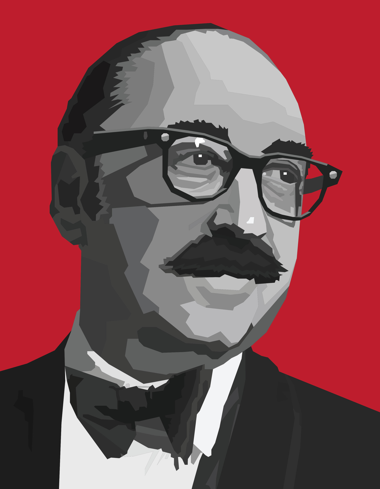

Bass in Black

This is a tribute to one of the most influential graphic designers in Hollywood history, Saul Bass.
He is mainly known for his very geometric art style with sharp rectangular shapes which appear in his iconic movie posters and storyboards.
I was really inspired by his art style, so I tried adapting his style a bit for this illustration.
I experimented with working in a geometric style using sharp and jagged lines to interpret this portrait.
Another inspiration for me were old spy movie posters that feature a strong black and white silhouette against a strong red background.
As I continued to work on this portrait, I discovered a lot of different approaches to help improve the visual clarity of my work. I learned that details can vary throughout a piece and you want to be very particular about which parts of your work get more of it. Generally, it's a good idea to give more detail to focal points of your piece and give less detail to the other parts of the piece. For instance, the important parts that draw the audience's attention, like his eyes or his mustache or his bowtie, received the most detail and definition. But everything else uses fewer shapes and less work since they are not meant to attract attention.